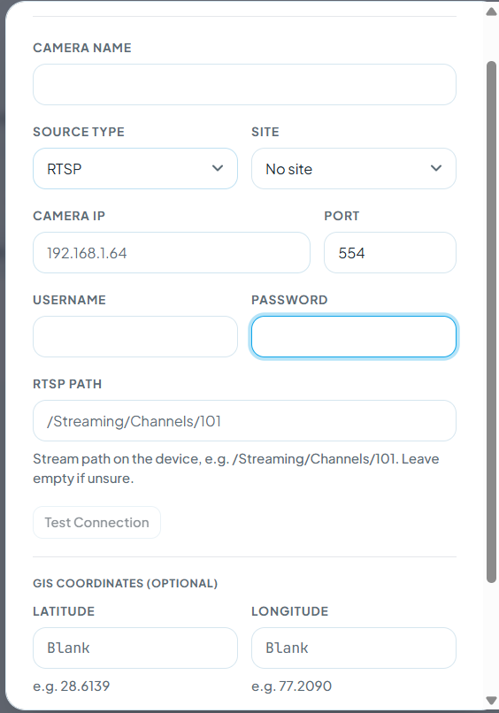
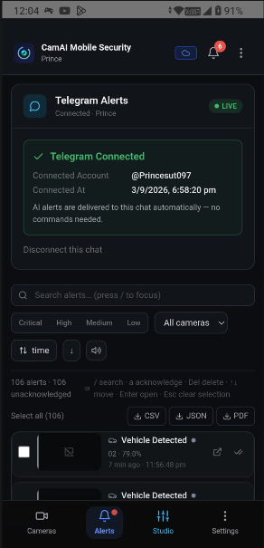
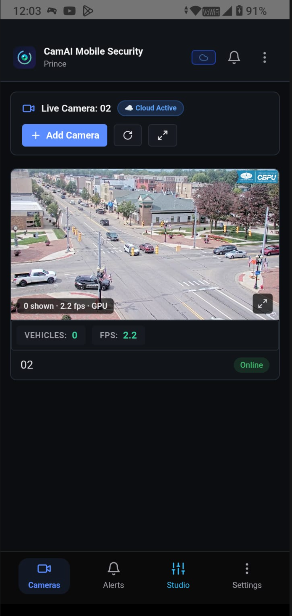
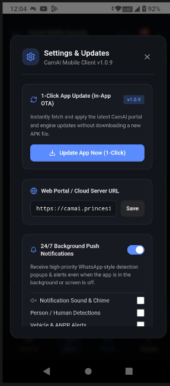
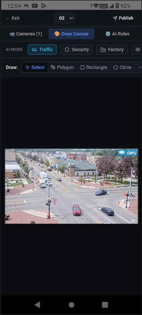
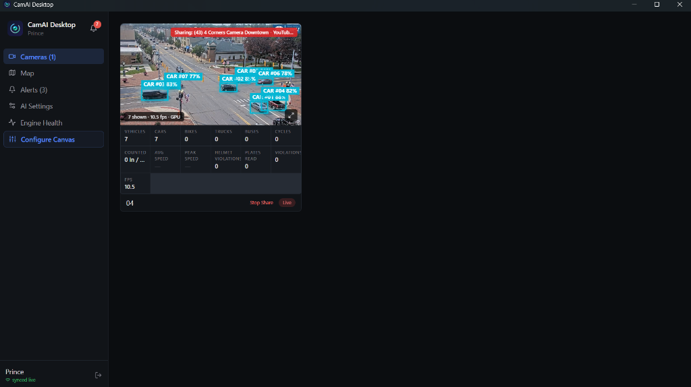
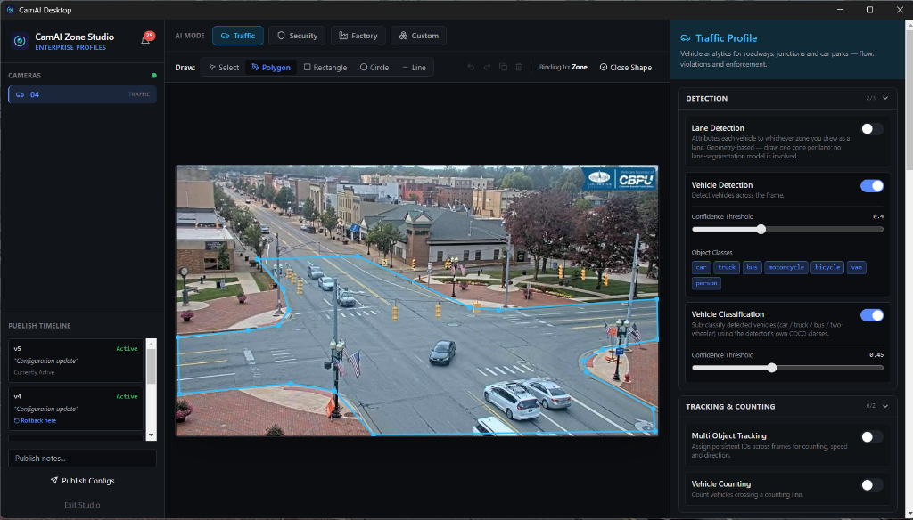
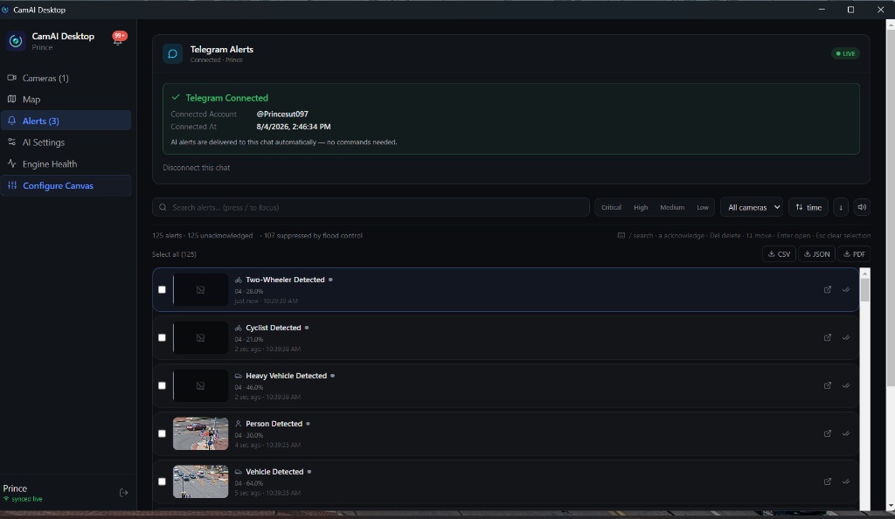
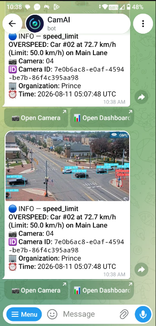
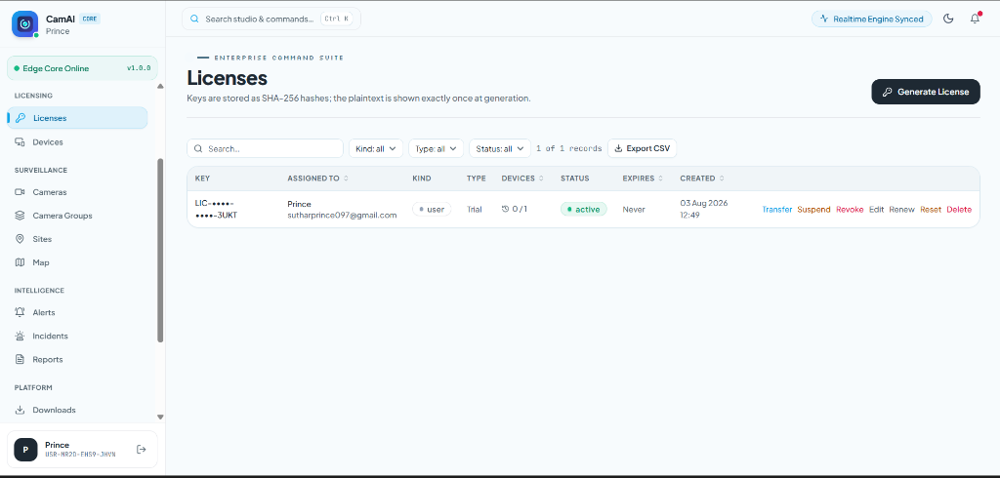

CamAI Enterprise
Enterprise AI Video Analytics Platform
Technology Overview & Commercialization Briefing
A deployable edge-to-cloud video analytics platform designed to convert existing CCTV, RTSP, and NVR camera infrastructure into an intelligent real-time monitoring, analytical, and incident management ecosystem.
1. Executive Overview
CamAI is a modular software platform engineered to deliver real-time artificial intelligence capabilities across video surveillance networks. The system bridges edge inference engines with cloud administration, providing end-to-end management for multi-camera deployments without requiring custom firmware modifications to underlying camera hardware.
The complete software asset is structured across four primary architectural layers:

Product Definition & Architecture
Complete Application Stack vs. Standalone AI Models
2. What is CamAI?
CamAI is not merely a standalone object detection model or a computer vision research script. It is a complete enterprise software application platform built around real-time inference pipelines. It encompasses device provisioning, multi-tenant isolation, real-time alert dispatching, workstation user interfaces, and administrative controls.
End-to-End Data & Telemetry Pipeline
3. Key Platform Components
- [1]Inference & Tracking Engine: Real-time frame processing supporting concurrent object detection, multi-target trajectory association, and specialized analytical workers (ANPR, Speed, Helmet).
- [2]Camera & Stream Manager: Automatic stream recovery, RTSP reconnection handling, synthetic frame fallbacks, and connection string encryption.
- [3]Rule & Incident Engine: Configurable spatial polygon zones, tripwire line crossing, dwell time accumulation, and threshold-based alert triggers.
- [4]Licensing & Device Binding: Cryptographic license key management with hardware fingerprinting (CPU, motherboard, Windows MachineGuid) and DPAPI-encrypted token vaults.
- [5]GIS Spatial Visualization: Real-time floor plan and outdoor map rendering using Leaflet canvas for spatial tracking of detected entities.

Web SaaS Cloud Admin Portal (`portal/`)
Centralized Multi-Tenant Cloud Management, Fleet Controls & Licensing
2A. SaaS Web Portal Architecture & Key Features
The browser-based SaaS Web Portal (built with React 18, Vite, TypeScript, and Tailwind CSS) serves as the primary administrative command suite for enterprise organization owners, security teams, and system integrators.

Dedicated Mobile Security Application (`mobile/`)
100% AWS Cloud GPU Processing, App-Closed Push Alerts & Mobile ROI Studio
2B. Mobile Security App Features & Cloud GPU Offloading
Built for Android and iOS devices, the CamAI Mobile App provides real-time security monitoring, instant mobile push alerts, and direct camera control for operators on the move.




| Mobile Feature Capability | Implementation Specification | User Experience Impact |
|---|---|---|
| 100% AWS Cloud GPU Offloading | Zero AI inference runs on the phone. All detection runs on AWS Cloud GPU Node (`13.203.71.14:8000`). | 0% battery drain & zero phone overheating during live viewing. |
| WhatsApp-Style 24/7 Push Alerts | High-priority alert notification dispatch delivered even when app is killed or device is locked. | Instant emergency notification with visual snapshot evidence thumbnail. |
| In-App LAN Camera Auto-Discovery | `+ Add Camera` modal scans local Wi-Fi / Ethernet subnet to discover ONVIF & RTSP streams. | 1-Tap camera setup directly from mobile device. |
| Unified Security & Analytics Mode | Toggle matrix covering Person, Vehicle (Car/Bike/Bus), Micro-Motion (Rodents), Pets, ANPR & Face. | Custom target detection profiling per mobile camera tile. |
Desktop Monitoring Studio & Edge AI Engine (`desktop/` & `server/`)
Decoupled Multi-Threaded Ingestion, Intel OpenVINO / CUDA & 4x4 Grid Canvas
2C. Desktop Software & Local AI Server Engine
The desktop ecosystem pairs a high-speed Python AI FastAPI server (`server/`) with an Electron operator workstation (`desktop/`) engineered for multi-screen security control rooms.

Technology Stack & License Inventory
Engineered Infrastructure & Commercial Redistribution Rights
4. Codebase & Technology Stack
| Layer | Primary Technologies | Architectural Purpose |
|---|---|---|
| AWS Cloud GPU Engine | AWS EC2 Cloud GPU (NVIDIA Accelerated), FastAPI, YOLOX, PyTorch | Offloaded 30+ FPS cloud inference with sub-second latency (<45ms) and 0% client CPU/GPU resource utilization. |
| Local Edge AI Server | Python 3.10+, FastAPI, PyTorch, OpenCV, OpenVINO, ONNX Runtime | High-throughput stream capture, frame decoding, Zero-DCE night vision, and synchronized MJPEG burn-in streaming. |
| Algorithms & Models | YOLOX, RT-DETR, YuNet ANPR, Micro-Motion Tracker, Zero-DCE | Multi-class detection, helmet compliance, license plate OCR, subtle rodent tracking, and low-light enhancement. |
| Desktop Workstation | Electron, React 18, TypeScript, Vite, Tailwind CSS, Leaflet GIS | Cross-platform operator interface, DPAPI encrypted local vault, zero ghost-box eviction, and live telemetry sync. |
| Cloud & Database | Supabase, PostgreSQL 15, Row-Level Security, Deno Edge Functions | Multi-tenant data isolation, single-click runtime mode switching (Cloud vs Local), and automated Telegram alerts. |
5. Documented Third-Party License Inventory
Components utilized in the production runtime path were selected to ensure compatibility with commercial OEM bundling and software distribution.
| Component / Dependency | Declared Open-Source License | Distribution Compliance Status |
|---|---|---|
| YOLOX Object Detector | Apache License 2.0 | Permissive commercial license; no copyleft requirements. |
| YuNet Plate & Face Detector | MIT License | Permissive commercial license. |
| CRNN License Plate OCR | Apache License 2.0 | Permissive commercial license. |
| RT-DETR Classifier Engine | Apache License 2.0 | Permissive commercial license. |
| FastAPI / OpenCV / OpenVINO | MIT / Apache 2.0 / BSD | Standard permissive industry open-source stack. |
| ByteTrack-Style Tracker | Original Implementation Claim | Seller source-code implementation; subject to buyer IP verification. |
AI Capabilities & Analytics Matrix
Implemented Computer Vision & Analytical Features
6. Detection, Tracking & Analytical Capabilities
The platform features a multi-tiered computer vision pipeline capable of running concurrent analytical workers depending on hardware availability and active camera profile configuration.
• Car, Bus, Truck, Motorcycle
• Bicycle & Helmet Compliance
• License Plates (ANPR)
• Bags, Backpacks, Suitcases
• Custom Target Image Upload
• Re-Identification (Re-ID) Gallery
• Occlusion Trajectory Recovery
• 8-Way Vector Heading
• Dwell & Dwell Time Accumulator
• One-Shot Vector Feature Matching
• ANPR OCR Engine
• 4×4 Crowd Density Grid
• Abandoned / Removed Object
• Motion Occupancy Heatmap
• Image-Based Target Matcher
7. Analytical Feature Breakdown
| Feature Module | Implementation Description | Primary Analytical Output |
|---|---|---|
| 🖼️ Custom Image Upload Target Matcher | User uploads any reference photo or crop (Face, Person, Vehicle, or Custom Object). Generates 512-d vector embeddings for real-time cross-camera matching & tracking. | Instant target match confidence score (%), live location tracking, visual bounding box alert trigger. |
| Homography Speed Engine | Calculates real-world speed (km/h) via 4-point ground-plane perspective matrix and Kalman smoothing. | Vehicle velocity measurement, over-speed alert triggers. |
| ANPR Plate Pipeline | Combines YuNet localized text cropping with CRNN character extraction. | Alphanumeric license plate string, confidence score, crop image. |
| Helmet Compliance Worker | Sub-crops two-wheeler riders and runs RT-DETR classification. | Helmet / No-Helmet status flag, violation evidence snapshot. |
| Crowd Density Evaluator | Divides camera view into spatial cells and computes person headcount per region. | Density severity (Moderate, High, Critical), occupancy threshold alerts. |
| Abandoned Object Worker | Monitors unassociated luggage items stationary for >15 seconds. | Unattended object alarm, temporal bounding box overlay. |
Target Deployment Zone Profiles
Configurable Camera AI Modes for Targeted Operational Environments
8. Implemented Zone Profiles (AI Modes)
CamAI allows operators to assign specialized Zone Profiles on a per-camera basis. Assigning a profile narrows the active detection class set at the engine layer, optimizing GPU allocation and eliminating irrelevant telemetry.
| Zone Profile | Target Operational Environment | Active Analytical Features |
|---|---|---|
| 🚦 Traffic Mode | Highways, urban intersections, toll plazas, arterial roads | Vehicle classification, ANPR plate reading, homography speed estimation, helmet compliance, lane counting, stop-line violations. |
| 🔒 Security Mode | Perimeters, corporate campuses, financial institutions, ATMs | Perimeter line-crossing, loitering detection, face detection, abandoned bag identification, crowd density evaluation. |
| 🏭 Factory & Warehouse Mode | Manufacturing facilities, warehouses, hazardous industrial zones | Worker headcount, restricted zone intrusion, schedule-gated monitoring, privacy masking of non-work areas. |
| 🌙 Micro-Motion & Night DCE Mode | Commercial warehouses, grain storage, low-light night perimeters | Subtle rodent/pest movement tracking, Zero-DCE automated low-light night enhancement, and temporal ghost-box eviction. |
| ⚙️ Custom Mode | Specialized commercial installations & custom rules | User-defined polygon zones, custom tripwire rules, custom dwell time thresholds, multi-class COCO tracking. |

Enterprise Application Matrix
Target Industry Opportunities & Value Propositions
9. Target Industry Opportunities
| Industry Segment | Operational Challenge | CamAI Target Capability |
|---|---|---|
| Smart City & Municipalities | Manual monitoring of city-wide CCTV networks; traffic congestion. | Traffic flow counting, ANPR plate logging, speed enforcement telemetry. |
| Highways & Toll Operators | Speed enforcement and toll lane compliance monitoring. | Homography speed gates, automated vehicle classification, plate recognition. |
| Industrial & Manufacturing | Worker safety compliance and restricted hazardous area monitoring. | Restricted zone intrusion alerts, worker headcount, schedule-gated rules. |
| Financial & Banking Premises | Perimeter security, ATM loitering, and branch crowd control. | Loitering detection, face detection, unattended object alerts. |
| Parking Operators | Automated entry/exit tracking and lot fill occupancy. | Entry/Exit ANPR logging, visual slot occupancy scoring, GIS lot fill map. |
| Security Systems OEMs | Lack of in-house AI software to bundle with camera hardware. | Full white-label branding, zero-cloud edge processing, rapid OEM integration. |
Integrated Platform Value
Commercial Infrastructure Built Around AI Engines
10. Why CamAI is a Platform, Not Just a Model
A common bottleneck in computer vision commercialization is the gap between a trained detection model and an enterprise-ready software product. CamAI fills this gap by delivering the complete application wrapper, database, licensing, and user management infrastructure required to operate a commercial product.
• Outputs raw bounding box coordinates
• Requires manual Python scripts to run
• No user management or security
• No database or persistent storage
• No multi-camera management UI
• Multi-tenant Postgres RLS database isolation
• Hardware-bound licensing & DPAPI encryption
• Interactive Desktop & Web Admin Portals
• Automated Telegram & SMTP incident dispatch
• Append-only security audit logging
System Architecture & Stream Decoupling
High-Throughput Streaming & Telemetry Synchronization
11. Decoupled Video & Telemetry Architecture
To prevent heavy AI model inference from degrading live video viewability, CamAI utilizes an architecturally decoupled streaming model.
12. Four-Tier Software Structure
| Component | Location | Core Responsibility |
|---|---|---|
| AI Inference Server | /server |
Frame capture, YOLOX detection, ByteTrack tracking, worker analytics, WebSocket telemetry broadcast. |
| Desktop Workstation | /desktop |
Operator grid view, Leaflet GIS floorplan, incident center, local hardware DPAPI licensing vault. |
| Cloud Backend | /supabase |
Postgres 15 DB, Row-Level Security policies, 21 Edge Functions for license and alert management. |
| Web Management Portal | /portal |
SaaS dashboard for organization administration, camera provisioning, user role management, downloads. |

Enterprise Governance & Licensing
Multi-Tenancy, Role-Based Access Control, and License Security
13. Multi-Tenant Organization Security
CamAI is designed as a true multi-tenant SaaS architecture. Customer data, cameras, alerts, and users are logically segregated at the PostgreSQL database layer using Row-Level Security (RLS) policies.
• Operator: Live monitoring, alert acknowledgment, camera configuration.
• Viewer: Read-only access to live streams and historical alerts.
• DPAPI local token vault via Electron safeStorage.
• Remote device deactivation and instant configuration revocation.
14. Cloud Edge Functions Suite (21 Modules)
The cloud backend incorporates 21 production Deno / TypeScript Edge Functions handling asynchronous security, administration, camera provisioning, telemetry ingestion, and instant mobile alerting.
| Edge Function Name | Category Domain | Operational Role & Execution Specification |
|---|---|---|
activate-license |
Licensing & Security | SHA-256 hardware MachineGuid fingerprinting, cryptographic license activation & DPAPI token vault creation. |
add-camera |
Camera Management | RTSP stream URL verification, AES-256-GCM credential encryption, and multi-tenant camera provisioning. |
admin-users |
Governance & RBAC | Role-Based Access Control (RBAC) user administration, role assignments (Admin, Operator, Viewer). |
decrypt-camera |
Security & Auth | Secure server-side decryption of camera RTSP passwords for authorized stream ingestion IPC. |
delete-account |
Privacy & Compliance | GDPR-compliant organization data, camera zone profiles, and telemetry incident history purging. |
desktop-sync |
Client Telemetry | Bi-directional state synchronization between Electron desktop client and cloud PostgreSQL backend. |
download-release |
App Distribution | Cryptographically signed desktop installer release distributor with SHA-256 checksum verification. |
github-releases |
Auto-Updater API | Bridge connecting desktop clients to GitHub releases for seamless background binary updates. |
invite-user |
User Management | Enterprise team member invitation dispatch with secure access token generation and RBAC scoping. |
my-keys |
API Authorization | User API key generation, secret rotation, and scoped bearer token management for REST endpoints. |
notify-telegram |
Alert Router | High-throughput incident dispatcher routing overspeed & tripwire alerts + visual evidence crops to Telegram. |
publish-config |
Zone Engine | Live camera analytical profile & polygon boundary publisher to edge inference nodes. |
report-camera-health |
Telemetry Stream | Automated 15-second heartbeat telemetry receiver monitoring camera online/offline/degraded status. |
report-events |
Event Ingestion | High-throughput detection event ingestion pipeline for ANPR plates, speed telemetry & tripwire logs. |
rollback-config |
Zone Engine | Version-controlled camera analytical profile rollback engine restoring previous polygon state. |
send-email |
Notifications | Transactional email gateway for security alert digests, password resets & user invitations. |
telegram-bot |
Interactive Bot | Interactive Telegram Bot webhook listener handling /status, /snapshot, and /alerts commands. |
telegram-link-code |
Mobile Pairing | 6-digit OTP account linking code generator for mobile Telegram bot account connection. |
telegram-test |
Preflight Diagnostics | Preflight test runner for validating Telegram Bot channel connection & evidence snapshot dispatch. |
test-camera |
RTSP Preflight | RTSP connection & latency probe verifying camera stream reachability before saving configuration. |
update-camera |
Camera Management | Dynamic RTSP parameters, encrypted credentials & analytical zone settings updater. |


Empirical Performance Evidence
Documented Hardware Benchmarks & Testing Configuration Notes
15. Documented Hardware Benchmarks
The performance figures below represent logged empirical measurements from test runs executed on defined hardware configurations.
| Hardware & Execution Environment | Stream Concurrency | Measured Inference FPS | Pipeline Latency | Logged Errors |
|---|---|---|---|---|
| ☁️ AWS EC2 Cloud GPU Node (Remote) | 1 – 16 Streams | 30+ FPS / stream | < 45.0 ms | 0% Client GPU/CPU Load |
| OpenVINO GPU (Discrete GPU) | 1 Stream | 57 FPS | 5.7 ms | 0 Errors |
| CPU-Only Execution Mode (x86_64) | 1 Stream | 31 FPS | 131.0 ms | 0 Errors |
| Concurrent Multi-Stream GPU | 4 Streams | 4.0 – 4.5 FPS / stream | 266.0 ms | 0 Errors |
| Intel UHD 620 iGPU (ANPR Stack) | 1 Stream | 9 – 11 FPS | Not Documented | 0 Errors |
Engineering Maturity & Codebase Scope
Quantitative Codebase Indicators & Architectural Assets
16. Codebase Metrics
17. Implemented Operational Tools
- ✓Automated Testing Harness: Automated PyTest suite covering pipeline initialization, tracker state, analytics rules, and API endpoints.
- ✓Database Migrations: 44+ versioned PostgreSQL SQL scripts defining tables, triggers, and RLS policies.
- ✓Deployment Automation: PowerShell deployment scripts (
deploy_supabase.ps1) for edge function compilation and environment setup.

CamAI-Desktop-Setup-1.0.7.exe, 356.7 MB), GitHub automated production releases pipeline, bundled offline/cloud engine toggles, and cryptographic SHA-256 checksum verification (4dadbe61f...276427d3).
Security Assessment & Controls
Internal Security Review & Data Protection Mechanisms
18. Internal Security Assessment
An internal security audit was conducted on July 25, 2026 covering 326 source files against OWASP Top 10 and ASVS guidelines. 33 of 38 identified findings were remediated during that pass.
| Assessment Domain | Baseline Score | Post-Remediation Score | Key Controls Applied |
|---|---|---|---|
| Overall Security Score | 41 / 100 | 82 / 100 | Internal evaluation metric (not third-party certification). |
| Authorization & Multi-Tenancy | 30 / 100 | 90 / 100 | Postgres RLS policy hardening & trigger lockouts. |
| API & Pipeline Security | 62 / 100 | 84 / 100 | Loopback bindings & X-CamAI-Token header enforcement. |
| Credential Encryption | 72 / 100 | 78 / 100 | AES-256-GCM encryption for camera connection strings. |
Commercialization Pathways
Flexible Structures for Strategic Buyers & Technology Partners
19. Transaction & Commercialization Models
CamAI is available for commercial transaction under flexible structures depending on the strategic objectives, distribution reach, and vertical focus of the acquiring party.
| Commercialization Pathway | Structure Description | Ideal Strategic Counterparty |
|---|---|---|
| Full Technology Acquisition | Complete assignment of all intellectual property, source code, repositories, branding, and deployment assets. | Corporate buyers seeking full asset ownership and exclusive global control. |
| Exclusive Regional / Vertical License | Exclusive commercial licensing rights granted for a specific geographic region (e.g., North America, Gulf) or industry vertical. | Established regional system integrators & enterprise software distributors. |
| OEM / White-Label Integration | License to rebrand, bundle, and distribute CamAI software embedded within hardware or camera products. | CCTV manufacturers, NVR OEMs, and physical security hardware vendors. |
| Strategic Joint Venture / Partnership | Co-commercialization agreement pairing the CamAI platform with an partner's enterprise sales channel. | Managed security service providers & government IT contractors. |
Target Buyer Profile & Value Alignment
Strategic Categories Well-Positioned to Leverage CamAI
20. Strategic Counterparty Profiles
Integration & Product Expansion
Technical Pathways for Commercial Productization
21. Product Expansion Opportunities
An acquiring strategic partner can commercialize or extend the CamAI platform through several documented software extension points:
- →Custom AI Model Ingestion: Replace or supplement YOLOX/YuNet with buyer-proprietary ONNX or TensorRT models via the standardized inference interface.
- →VMS API Connector: Integrate telemetry WebSockets into existing enterprise VMS platforms (e.g., Milestone, Genetec) via standard REST webhooks.
- →Custom Edge Hardware Bundling: Package the Python AI server onto dedicated Linux/Windows edge gateway devices (NVIDIA Jetson, Intel NUC).
- →SaaS Billing Gateway: Connect the 21 Supabase Edge Functions to commercial billing platforms (Stripe/Chargebee) for automated monthly subscription management.
Validation & Credibility Framework
Transparent Boundaries Between Proven Assets & Due Diligence Items
22. Technical Credibility Matrix
| Verified & Implemented Assets | Items Subject to Buyer Due Diligence |
|---|---|
| ✓ 384 tracked source files across 4 codebases | ⚠ Multi-camera scale beyond 4 concurrent streams |
| ✓ 283 passing unit and integration tests | ⚠ Historical commercial revenue & customer adoption |
| ✓ 57 FPS single-camera benchmark logged | ⚠ Independent third-party security certification |
| ✓ 21 Supabase Edge Functions & 44+ SQL migrations | ⚠ Third-party model weight provenance audit |
| ✓ Hardware DPAPI license key binding vault | ⚠ Speed accuracy verification across extreme camera angles |
| ✓ Real-time Leaflet GIS mapping & Telegram bot | ⚠ Regulatory compliance for specific deployment jurisdictions |
Buyer Technical Due Diligence Framework
Recommended Verification Checklist for Engineering & Legal Teams
23. Technical Due Diligence Checklist
| Audit Category | Recommended Buyer Review Tasks |
|---|---|
| Codebase & Testing |
□ Execute complete PyTest suite (283 server tests) □ Run hardware benchmark script ( production_readiness_report.py)□ Build Electron desktop app and inspect DPAPI safeStorage integration |
| Security & Architecture |
□ Inspect PostgreSQL Row-Level Security policies across 44+ migrations □ Verify AES-256-GCM encryption for RTSP camera connection strings □ Review loopback bindings for local AI server REST endpoints |
| Legal & IP Inventory |
□ Perform Software Bill of Materials (SBOM) dependency scan □ Verify open-source model weights (YOLOX, YuNet, RT-DETR) □ Confirm assignment of contributor code rights and domain assets |
Next Steps & Confidential Evaluation
Process for Qualified Corporate & Strategic Counterparties
24. Engagement Process
Qualified strategic counterparties, CCTV OEMs, and corporate development teams are invited to evaluate the CamAI platform through the following structured steps:
- Step 1Confidential Introduction: Initial discussion to review strategic fit and operational alignment.
- Step 2Live Product Demonstration: Guided live demonstration of the AI Engine, Desktop Client, Cloud Portal, and Telegram Bot.
- Step 3Architecture & Code Review: Technical briefing with engineering leadership covering codebase structure and deployment options.
- Step 4Technical Due Diligence: Access to test repository, benchmark scripts, and documentation for verification.
- Step 5Commercial Alignment: Discussion of transaction structure (Full IP Acquisition, Licensing, or OEM Partnership).
25. Confidentiality & Legal Disclaimer
Confidential Briefing Disclaimer: This document contains technical and architectural information describing the CamAI Enterprise software platform as of August 2026. This document is provided solely for technical evaluation and strategic discussion. Performance benchmarks represent empirical results from specific test configurations. Mention of potential enterprise use cases or market applications does not constitute historical customer revenue or production deployment claims. All IP rights, licensing, security posture, and legal terms remain subject to documentary verification and definitive agreements.
Visual Product Showcase & User Interface Gallery (Part 1)
Production Screenshots of Web Portal, Desktop Client & Admin Suite
26. Complete Software Interface Gallery
Below is a comprehensive visual compilation of live production screenshots across the Web Portal, Mobile App, Desktop Studio, Zone Editor, Telegram Dispatch, and Licensing Vault.
Visual Product Showcase & User Interface Gallery (Part 2)
Dedicated Mobile Security App Screenshots (iOS & Android Production Client)